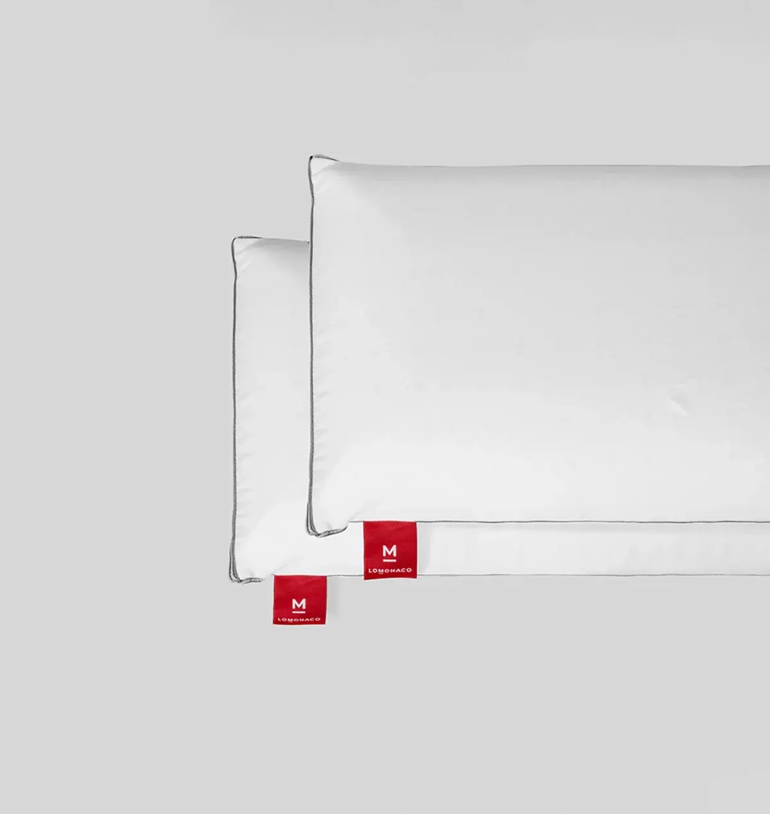
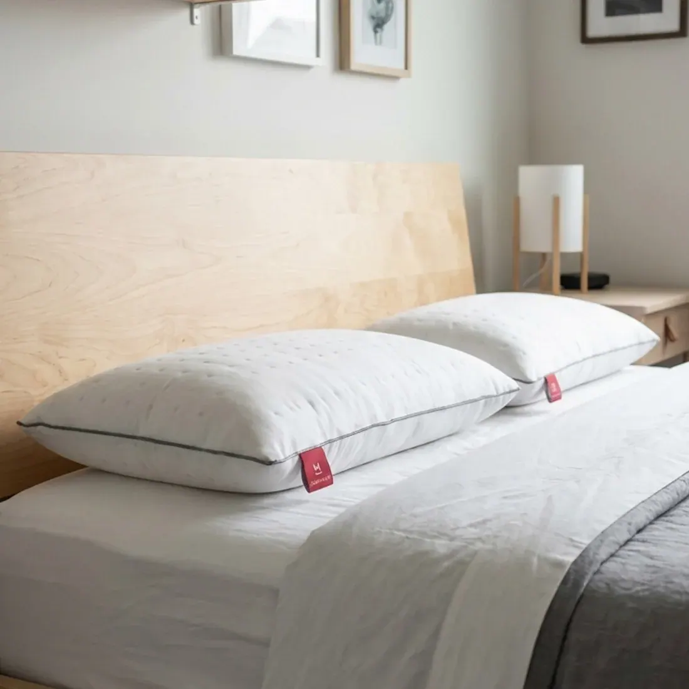
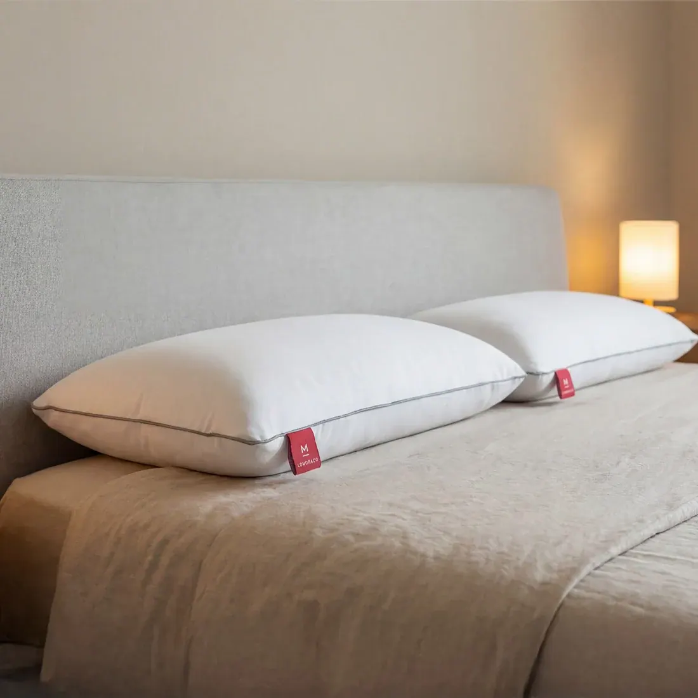
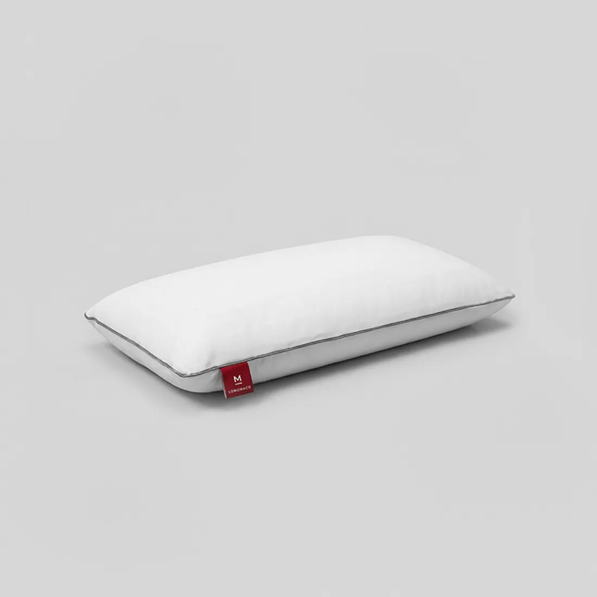

Almohada viscoelástica o de látex: cuál elegir

La almohada viscoelástica y la de látex son las dos que más se comparan cuando toca cambiar de almohada, y se parecen poco al apoyar la cabeza: una se amolda despacio y te envuelve, la otra se adapta y vuelve a su forma al momento. En esta guía te explicamos en qué se diferencian, cuál va mejor según cómo duermes y cómo acertar con la medida.
Respuesta rápida
No hay una almohada mejor que otra: depende de cómo duermes y de lo que buscas.
- Almohada viscoelástica: se amolda a la cabeza y al cuello y reparte la presión. Para quien duerme boca arriba o busca una sujeción estable y envolvente.
- Almohada de látex: es elástica, fresca y recupera su forma al instante. Para quien duerme de lado, pasa calor o se gira mucho por la noche.
Si tienes alergia al látex, la viscoelástica es la opción sin látex.
¿Qué diferencia hay entre una almohada viscoelástica y una de látex?
La almohada viscoelástica es de una espuma que se amolda poco a poco a la cabeza y al cuello con el calor y el peso, y conserva esa forma mientras estás apoyado. La de látex es de un material elástico que cede donde apoyas y vuelve a su forma al instante. La primera envuelve; la segunda sujeta con un apoyo más ágil y fresco.
- Almohada viscoelásticaReacciona a la temperatura y a la presión: al apoyar la cabeza se hunde despacio y copia la curva del cuello, así que el apoyo queda repartido y sin puntos de presión. Esa sensación de «molde» es la que la ha hecho tan popular. Es el material de nuestra almohada viscoelástica ViscoAir.
- Almohada de látexEs elástica: se adapta a la forma de la cabeza, pero empuja de vuelta enseguida, así que no te quedas «atrapado» al girarte. Su estructura deja circular el aire, por eso suele ser más fresca que la viscoelástica. En LOMONACO la almohada de látex es un producto de la casa desde 1997.

Comparativa: almohada viscoelástica o de látex
La almohada viscoelástica gana en adaptación y en alivio de la presión; la de látex, en frescor, en recuperación y en facilidad para cambiar de postura. La viscoelástica suele ser más económica y la de látex, más duradera.
| Característica | Viscoelástica | Látex |
|---|---|---|
| Sensación al apoyar la cabeza | Te envuelve | Elástica, con rebote suave |
| Adaptación a cabeza y cuello | Muy alta | Alta |
| Recupera su forma | Despacio | Al instante |
| Frescor | Medio | Alto |
| Facilidad para girarte | Media | Alta |
| Alivio de la presión | Muy alto | Alto |
| Apta con alergia al látex | Sí | No |
| Precio | Más económica | Algo más cara |
Comparación general entre los dos materiales. Cada almohada cambia según su forma, su altura y su funda.
¿Cuál es mejor según cómo duermes?
De lado, la almohada de látex, porque rellena bien el hueco entre el hombro y la cabeza y no se aplasta. Boca arriba, la viscoelástica, que sigue la curva natural del cuello. Boca abajo, una almohada baja y blanda, o ninguna. Si te mueves mucho, el látex no te frena al girarte.
- Si duermes de ladoEs la postura que más altura pide, porque hay que salvar el ancho del hombro para que la cabeza quede alineada con la columna. La almohada de látex mantiene esa altura toda la noche y es la que recomendamos para dormir de lado.
- Si duermes boca arribaNecesitas una altura media que sostenga el cuello sin empujar la cabeza hacia delante. La viscoelástica se amolda a la curva cervical y reparte el peso, por eso es la opción más habitual en esta postura.
- Si duermes boca abajoLo importante es que la almohada sea baja para no girar el cuello hacia atrás. Muchas personas que duermen así prefieren una almohada fina o dormir sin ella. Si usas almohada, la viscoelástica cede más bajo la cabeza y deja el cuello más bajo.
- Si cambias mucho de posturaElige látex: recupera su forma al instante y te sujeta igual al pasar de lado a boca arriba.
La almohada trabaja junto con el colchón: si el colchón es muy blando, el hombro se hunde y la almohada tiene que ser más baja. En nuestra guía sobre la firmeza del colchón te explicamos cómo encajar las dos cosas.
Consejo del Asesor del Descanso. Cuando nos llaman dudando entre las dos, preguntamos siempre lo mismo: ¿en qué postura te despiertas? Es la postura en la que pasas más horas, y la que debe decidir la almohada, más que la postura en la que te duermes.
Ventajas y desventajas de la almohada viscoelástica
La almohada viscoelástica se adapta muy bien al cuello, alivia la presión y da una sujeción estable, y no lleva látex. Como contrapartida, guarda algo más de calor, tarda unos segundos en recuperar la forma al girarte y en frío se nota más firme hasta que coge temperatura.
Ventajas
- Se amolda a la forma de la cabeza y del cuello
- Reparte el peso y alivia la presión
- Sujeción estable, sin rebote
- Sin látex: apta si tienes alergia a este material
- Suele ser más económica que la de látex
Desventajas
- Guarda algo más de calor que el látex
- Recupera la forma despacio al cambiar de postura
- En una habitación fría se nota más firme al principio
- Hay que elegir bien la altura: no se aplasta para compensar
Nuestra almohada ViscoAir lleva canales de ventilación para dejar pasar el aire y reducir ese calor. Puedes ver el resto en nuestra categoría de almohadas.

¿Y si tienes dolor cervical, pasas calor o tienes alergia?
Con dolor cervical, lo que más cuenta es que la altura de la almohada deje el cuello alineado con la columna; las dos sirven si la altura es la correcta. Si pasas calor, elige látex. Si tienes alergia al látex, elige viscoelástica.
Elige látex si…
- Pasas calor por la noche
- Duermes de lado
- Te giras mucho mientras duermes
- Buscas una almohada que dure más años
Elige viscoelástica si…
- Duermes boca arriba
- Te gusta notar que la almohada te envuelve
- Tienes alergia al látex
- Buscas la opción más económica
Si el dolor de cuello no se va. Una almohada adecuada ayuda a despertar sin tensión, pero no sustituye al consejo de un profesional. Si el dolor cervical dura semanas o va a más, consulta con tu médico o fisioterapeuta.
¿Qué medida de almohada necesitas?
La almohada se elige según el ancho de la cama: de 70 a 90 cm para camas individuales y una de 135 cm o dos individuales para camas de matrimonio. Nuestras dos almohadas, viscoelástica y de látex, están en 70, 75, 90 y 135 cm.
| Ancho de la cama | Una almohada | Dos almohadas |
|---|---|---|
| 90 cm | 70 o 75 cm | — |
| 105 cm | 90 cm | — |
| 135 cm | 135 cm | Dos de 70 cm |
| 150 cm | 135 cm | Dos de 75 cm |
| 160 cm o más | — | Dos de 75 o 90 cm |
Orientación general. En camas de matrimonio, dos almohadas individuales permiten que cada persona elija su material.
Ese es un buen truco en pareja: si uno duerme de lado y el otro boca arriba, podéis tener una almohada de látex y otra viscoelástica en la misma cama. Las encontrarás por medida en almohada 70, almohada 75, almohada 90 y almohada 135.
Las almohadas de LOMONACO
Tenemos una almohada de cada material: la ViscoAir, viscoelástica con soporte cervical y canales de ventilación, y la almohada de látex, elástica y transpirable, que hacemos desde 1997. Las dos están en 70, 75, 90 y 135 cm y tienen envío gratis.

Almohada ViscoAir
- Viscoelástica con soporte cervical
- Canales de ventilación
- Ideal si duermes boca arriba

Almohada de látex
- Elástica y transpirable
- Recupera su forma al instante
- Ideal si duermes de lado
¿No sabes cuál elegir? Te ayudamos
Cuéntale a un Asesor del Descanso cómo duermes, si pasas calor y qué colchón tienes, y te dirá qué almohada y qué medida encajan contigo. Es gratis y sin compromiso.
Hablar con un asesorVer almohadasNuestra recomendación
Si duermes de lado, pasas calor o te mueves mucho, elige la almohada de látex. Si duermes boca arriba, te gusta la sensación de que la almohada te envuelve o tienes alergia al látex, elige la viscoelástica. Y en pareja, no tenéis que poneros de acuerdo: dos almohadas individuales, una de cada material, resuelven la duda.
Preguntas frecuentes sobre la almohada viscoelástica y la de látex
¿Qué es mejor, una almohada viscoelástica o de látex?
Depende de cómo duermes. La almohada de látex es más fresca, más elástica y recupera su forma al instante, por eso va mejor si duermes de lado, pasas calor o te giras mucho. La viscoelástica se amolda más a la cabeza y al cuello y alivia mejor la presión, y suele preferirse si duermes boca arriba.
¿La almohada viscoelástica da calor?
Guarda algo más de calor que la de látex, porque la espuma viscoelástica reacciona a la temperatura del cuerpo. Las almohadas con canales de ventilación, como nuestra ViscoAir, dejan pasar el aire y reducen mucho esa sensación. Si pasas mucho calor por la noche, la de látex es más fresca.
¿Qué almohada es mejor para dormir de lado?
Una almohada con altura suficiente para salvar el ancho del hombro y que no se aplaste durante la noche. La almohada de látex cumple bien las dos cosas, por eso es la que recomendamos si duermes de lado.
¿Cada cuánto hay que cambiar la almohada?
En general, conviene revisarla cada 2 o 3 años. Si al doblarla no recupera la forma, si tiene bultos o si te despiertas con el cuello cargado, es momento de cambiarla. El látex suele aguantar más tiempo que la viscoelástica porque recupera mejor su forma.
¿Se pueden lavar las almohadas viscoelásticas y de látex?
Lo que se lava es la funda. El interior de viscoelástica o de látex no se mete en la lavadora: basta con airearlo de vez en cuando, sin dejarlo al sol directo ni en un sitio húmedo durante mucho tiempo, porque eso acelera el envejecimiento del material.
Elige tu almohada por medida
Fuentes
- Fichas de producto de la almohada ViscoAir y de la almohada de látex de LOMONACO: material, medidas e indicaciones de mantenimiento (consultadas el 11 de noviembre de 2026).
- Experiencia del equipo de Asesores del Descanso de LOMONACO con las consultas sobre almohadas.